<!DOCTYPE html>
<html lang="en">

<head>
  <meta charset="utf-8" />
  <meta name="viewport" content="width=device-width, initial-scale=1.0, maximum-scale=1.0, user-scalable=no" />

  <title>Data Availability (Backing & Availability)</title>
  <link rel="icon" href="./../../assets/favicon.svg" />
  <link rel="shortcut icon" href="./../../assets/favicon.png" />
  <link rel="stylesheet" href="./../../dist/reset.css" />
  <link rel="stylesheet" href="./../../dist/reveal.css" />
  <link rel="stylesheet" href="./../.././assets/styles/PBA-theme.css" id="theme" />
  <link rel="stylesheet" href="./../../css/highlight/shades-of-purple.css" />

  <link rel="stylesheet" href="./../.././assets/styles/custom-classes.css" />

</head>

<body class="site">
  <header class="site-header">
    <!-- This logo is a link only on the watching server, not the production build -->
    <a href="">
      
    </a>
  </header>
  <main class="reveal">
    <article class="slides">
      <section  data-markdown><script type="text/template">

# Data Availability

## Backing & Availability
</script></section><section  data-markdown><script type="text/template">
# Data Availability

## Actors

<pba-cols>
<pba-col>
  <ul>
    <li>Collators</li>
    <li>Validators</li>
  </ul>
</pba-col>
<pba-col>

</pba-col>
</pba-cols>
</script></section><section  data-markdown><script type="text/template">
# Data Availability

## Agenda

- Assignment
- Backing
- Availability
- Erasure Coding
</script></section><section  data-markdown><script type="text/template">
# ELVES

<pba-flex center>

1. Collation: Collect transactions.
1. **Backing: Assign responsibility.**
1. **Availability: Preserve data.**
1. Approval Checking: Verify correctness.
1. Disputes: Resolve escalations.

</pba-flex>

<aside class="notes"><p>Last time we looked into collators and how they are producing collations. At the end they had to send them over to the relay chain. But what does that mean? To who exactly?</p>
</aside></script></section><section ><section data-markdown><script type="text/template">
# Assignment

<aside class="notes"><p>To answer that question we&#39;ll look into a procedure I call an assignment or backing assignment.</p>
</aside></script></section><section data-markdown><script type="text/template">
# Assignment

## Active Validators



**Active validators** are given to the parachain protocol by the NPoS election subsystem.

<aside class="notes"><p>Assignment will be operating only <strong>Active validators</strong>. They are given to the parachain protocol by the NPoS election subsystem. Currently there are 600 validators in the active set in Polkadot and a new active set get&#39;s elected every era which is 24h in Polkadot. For those 24h those validators are the core players in the Polkadot game. Others are temporarily sitting on the bench.</p>
</aside></script></section><section data-markdown><script type="text/template">
# Assignment

## Backing Groups


Validators are divided into small **Backing Groups**.

<aside class="notes"><p>Every Session (4 hours in Polkadot), the parachains consensus takes in those active validators and <em>partitions</em> them into small <strong>groups</strong> which work together. Those groups are currently around 5 validators each in Polkadot and Kusama. Those groups are called backing groups.</p>
<p>This is only a teaser but backing groups are mapping 1 to 1 to Polkadot <strong>Execution Core</strong>s, and these assignments are rotated around every few blocks. Currently a parachain is connected to a specific execution core, think of it as a core that executes parachain blocks.</p>
</aside></script></section><section data-markdown><script type="text/template">
# Assignment

## Execution Cores


Each backing group corresponds to a **Polkadot Execution Core**.
One execution core can handle a single parachain block every 6s.

<aside class="notes"><p>In that map the white ovals are the validators. They are grouped into backing groups of size and each group is assigned to a specific execution core - that&#39;s the symbolic black square on the purple relay chain ring. Each execution core is capable of serving a single parachain or to be more precise a single parachain block.</p>
</aside></script></section><section data-markdown><script type="text/template">
# Assignment

## Rotations


Once every few blocks the backing groups **rotate** around the execution cores.

<aside class="notes"><p>Once every few blocks the backing groups <strong>rotate</strong> around and they change the execution core they are serving. This makes it so even if a backing group is full of malicious they cannot wholly block a specific execution core for too long.</p>
</aside></script></section><section data-markdown><script type="text/template">
# Assignment

## Para <-> Execution Core

Parachains or tasks get mapped to specific executions cores

More on this in the scheduling lecture (Agile Coretime)

<aside class="notes"><p>Each parachain, parathread or a task in the polkadot ecosystem gets matched with a speciifc execution core when it can produce a block.
We will explore this process in depth in the scheduling lecture.</p>
</aside></script></section><section data-markdown><script type="text/template">
# Assignment

## Collator Interaction

Collators once they build the parablock need to check who are the validators that are currently assigned to their execution core and send the collations to them over the p2p network.

<aside class="notes"><p>Collators once they build the parablock (often referred to as candidate parablocks or just candidates) need to check who are the validators that are currently assigned to their execution core and send the collations to them.</p>
</aside></script></section></section><section ><section data-markdown><script type="text/template">
# Backing

<aside class="notes"><p>Now we finally arrive at Backing. We just sent some collations to the validators in our backing group. What happens next?</p>
</aside></script></section><section data-markdown><script type="text/template">
## Backing - Backers


Validators in the backing group are often called backers.

<aside class="notes"><p>Validators in the backing group are often called backers for those parablocks that are coming in to them from the collators. That is the group we created in the assignment step. The few validators or backers (3 on the image) receive a bunch of parachain blocks / parablocks / collations / candidates (all the same thing).</p>
</aside></script></section><section data-markdown><script type="text/template">
## Backing - Backers


<aside class="notes"><p>We can zoom in on a specific backing group. Here we can see that backers are first point of contact to the outside world. They are the like club bouncers for the relay chain.</p>
</aside></script></section><section data-markdown><script type="text/template">
## Backing - Checks

The backers receiving collations need to perform some initial checks to ensure their validity.

<aside class="notes"><p>But for them to do their job correctly backers after receiving collations need to perform some initial checks to ensure their validity. They simply cannot trust random data blobs coming from the external nodes. And to perform those checks they will be utilising the PVF - parachain validation function we introduced last lecture.</p>
</aside></script></section><section data-markdown><script type="text/template">
## Backing - PVF definition


> **Parachain Validation Function** (PVF) is a function which takes in the current parachain state (PoV), the promised parachain state, and the parachain state transition arguments. It re-executes the parachain logic/runtime/STF using the arguments on the current state and checks if it matches the promised state. If it does, the parachain block is valid.

<aside class="notes"><p>Read definition.
PVF reruns the STF in a sandbox environment to test its outputs.</p>
</aside></script></section><section data-markdown><script type="text/template">
## Backing - STF reminder


<aside class="notes"></aside></script></section><section data-markdown><script type="text/template">
## Backing - PVF code

From a Validator's perspective, a parachain is a WebAssembly blob which exposes the following (simplified) function:

```rust
type HeadData = Vec<u8>;

struct ValidationResult {
  /// New head data that should be included in the relay chain state.
  pub head_data: HeadData,
  // more fields, like outgoing messages, updated code, etc.
}

fn validate_block(parent: HeadData, relay_parent: RelayChainHash, pov: Vec<u8>)
  -> Result<ValidationResult, ValidationFailed>;
```

<aside class="notes"><p>That&#39;s a slightly simplified code example of how it might look. The validator has access to the parachain Wasm blob which is the parachain state transition logic. They also have the current state as pointed to by the parent HeadData. We only need to provide the transactions, details about the old state (merkle proof) and the new state root and both of those are located in the PoV variable - Proof of Validity.</p>
<p>PoV contains the elements necessary for the state transition and the resulting state so it&#39;s something the validator can easily check if it&#39;s correct or not.</p>
</aside></script></section><section data-markdown><script type="text/template">
## Backing - PVF results

In the end the backer performing the `validate_block` knows that the transition is either correct or not.

<aside class="notes"><p>In the end the backer performing the <code>validate_block</code> knows that the transition is either correct or not. Actually what even can cause it to fail?</p>
</aside></script></section><section data-markdown><script type="text/template">
### Backing - PVF failure

**Why might `validate_block` fail?**

1. `parent` or `PoV` is malformed - the implementation can't transform it from an opaque to specific representation
1. `parent` and `PoV` decode correctly but don't lead to a valid state transition
1. `PoV` is a valid block but doesn't follow from the `parent`

```rust
fn validate_block(parent: HeadData, relay_parent: RelayChainHash, pov: Vec<u8>)
  -> Result<ValidationResult, ValidationFailed>;
```

<aside class="notes"><p>Point 1. To verify the state transition we need the pre-state and the transition arguments. If we cannot decode them we cannot verify the transition so it fails by definition.
Point 2. Everything decodes nicely but the state we are reaching using the pre-state and those transition arguments is not allowed by the parachain logic. So it&#39;s a bad transition.
Point 3. Transitions seems legal but they are anchored to a different parent so we cannot allow recontextualizing them.</p>
<p>The biggest one that we are concerned about is point 2. We need to make sure that no malicious actors adds a malicious transaction that suddenly for instance pays them a million coins from an empty account. That would be an example of a bad transition.</p>
</aside></script></section><section data-markdown><script type="text/template">
## Backing - Statements

<pba-flex center>

- Receive collation
- Validate
- Sign a statement
- Share statement with other backers

</pba-flex>

<aside class="notes"><p>Once a backer verifies that the parablock is correct they create and sign their backing statement. This will be a receipt, a proof that they approved this block which is crucial for...</p>
</aside></script></section><section data-markdown><script type="text/template">
## Backing - Skin in the Game

<pba-flex center>

- The main goal of backing is to provide "skin in the game".

- Backers are agreeing that if the parablock turns out to be bad, they will lose 100% of their stake.

</pba-flex>

<aside class="notes"><p>Making sure that the backers put some skin in the game. Backers are validators so they have a lot of stake, generally millions of DOT, so if they make incorrect statements they are putting a lot on the table.</p>
</aside></script></section><section data-markdown><script type="text/template">
## Backing - Skin in the Game

<pba-flex center>

- The main goal of backing is to provide "skin in the game".

- Backers are agreeing that if the parablock turns out to be bad, they will lose 100% of their stake.

- Backing on its own does not provide security, only **accountability**.

- Parablock head data as well as the backing statements are embedded into the relay chain (can be multiple parablocks)

</pba-flex>

<aside class="notes"><p>The main goal of backing is not immediate security but accountability. Backers are doing the checks to protect themselves from being punished. Those details will be embedded into the chain so backers can be held accountable.</p>
</aside></script></section><section data-markdown><script type="text/template">
## Backing - Networking


<aside class="notes"><p>Once a certain threshold of backers (3 of 5 in Polkadot) in the group approves the parablock it moves to the next stage. It can be broadcasted beyond it&#39;s backing group.</p>
</aside></script></section><section data-markdown><script type="text/template">
## Backing - Onchain

Once a block author spots enough backing statements he puts them **on chain** as part of a block authoring inherent.


</script></section><section data-markdown><script type="text/template">
## Block Production - Candidate Receipts

**Candidate receipt:**

- The parachain ID.
- The collator's ID and signature.
- A hash of the parent block's candidate receipt.
- A Merkle root of the block's erasure-coded pieces.
- A Merkle root of any outgoing messages.
- A hash of the block.
- The state root of the parachain before block execution.
- The state root of the parachain after block execution.

<aside class="notes"><p>I mentioned that authors add a parablock into the relay chain block they are authoring. But in reality adding a whole parablock to the relay chain block is not feasible. We need a compact representation of the parablock/candidate - a candidate receipt. In it we store all the elements needed to identify the block later on and ensure that the data and transitions match to what was approved.</p>
</aside></script></section></section><section  data-markdown><script type="text/template">
# Data Availability

<aside class="notes"><p>Backers accepted the responsibility for the parablock but now there&#39;s some more work to be done.</p>
</aside></script></section><section ><section data-markdown><script type="text/template">
# (No) Data Availability

Imagine a situation where a backer discards the PoV once he succesfully backs it and no one else keeps it as well.

He already checked, why would he need to keep it?

This would be equivalent to having NO Data Availability
</script></section><section data-markdown><script type="text/template">
# (No) Data Availability

## Malicious Collator Attack

- Parachains are blockchains, blocks need to reference their parents
- In the happy case collators share their collations between themselves
- What if a parachain block author withholds the collation from other collators?

<aside class="notes"><p>The problem is this can be severely exploited.
Parachains are blockchains so each block references a specific parent. They cannot build upon something they don&#39;t know.
Normally a parachain block author would send the collation to the relay chain for validation but he would also shares it with other collators. Other collators will build blocks on top of this parablock so they need to learn about it and import it.</p>
</aside></script></section><section data-markdown><script type="text/template">
# (No) Data Availability

## Malicious Collator Attack

<div class="r-stack">


<!-- .element: class="fragment" data-fragment-index="1" -->
</div>

<aside class="notes"><p>So the attack scenario goes like this. The attack is selected as parachain block author.</p>
<p>They build the collation but they selectively send it only to the relay chain validators and ignore other collators. The relay chain will process the parablock and potentially accept and finalize it.</p>
<p>Other collators in that situation cannot build new blocks because they dont have the exact transactions in that blocks. What ends up on the relay chain is only a hash of them. So they cannot just read it from the relay chain.</p>
<p>What&#39;s the solution?</p>
<p>SWITCH</p>
<ul>
<li>Validators keep enough info for collators to reconstruct recent parachain blocks</li>
</ul>
<p>Validators cannot just discard the collations. They need to keep them for some time.
Then in worst case this information can be requested by collators to reconstruct the missing blocks and unstuck other collators.</p>
</aside></script></section></section><section ><section data-markdown><script type="text/template">
## (Centralised) Data Availability

So PoV need to be recoverable from the validators.

Can we just make backers keep them?
</script></section><section data-markdown><script type="text/template">
# (Centralised) Data Availability

## Malicious Backer Attack

😬
</script></section><section data-markdown><script type="text/template">
# (Centralised) Data Availability

## Malicious Backer Attack

- You can prove data being incorrect
- You cannot prove someone refusing to send you data

<aside class="notes"><p>The problem is we cannot trust the backers to distribute it fairly. They can just ignore honest nodes when we need they the data and this can be heavily exploited.</p>
<p>For the parablock to proceed in its lifecycle at one point or another others will need to verify it. To do it they need to have the necessary PoV data. So the data is not only needed for collators in emergencies it is also crucial for upcoming protocol stages.</p>
</aside></script></section><section data-markdown><script type="text/template">
# (Centralised) Data Availability

## Malicious Backer Attack


<aside class="notes"><p>The exact attack goes like this.
If the malicious backer is the only entity controlling the PoVs then other nodes cannot validate it and potentially raise an alarm. And even worse the attacker can distribute it to other malicious validators while actively avoiding the honest nodes creating an illusion of safety. Honest nodes know something is suspicious because they cannot retrieve the PoVs but it&#39;s impossible to prove.</p>
</aside></script></section><section data-markdown><script type="text/template">
# Data Availability

## Malicious Backer Attack


<aside class="notes"><p>If we create a data storage that is not controlled by the attacker then they cannot selectively distribute PoVs. Everyone that needs to check something can check something.</p>
</aside></script></section></section><section  data-markdown><script type="text/template">
# (Naive) Data Availability

Naive approach would be to make every validator store every PoV.

DOES NOT SCALE

<!-- .element: class="fragment" data-fragment-index="1" -->

<aside class="notes"><p>We already discussed the same classic problem of data replication. This simply wouldnt scale.</p>
</aside></script></section><section ><section data-markdown><script type="text/template">
# Data Availability Problem

How do we ensure a piece of data is retrievable without storing it on every single node forever (on-chain)?
</script></section><section data-markdown><script type="text/template">
## Availability - Erasure Coding

The goal: Avoid storing full PoV in each validator

<pba-flex center>

- Encode data of K chunks into a larger code word of N chunks
<!-- .element: class="fragment" data-fragment-index="1" -->
- Any K-subset of N chunks can be used to recover the data
<!-- .element: class="fragment" data-fragment-index="2" -->

</pba-flex>


<aside class="notes"><ul>
<li>Erasure coding allows storing only 3x PoV size vs 334x for 1000 validators</li>
</ul>
</aside></script></section><section data-markdown><script type="text/template">
## Availability - Erasure Coding


<aside class="notes"><p>It all sounds complicated but trust me it isnt. Let me show you an example.
That&#39;s a line. If we have those two red points everyone agrees that there is only 1 specific line we can draw through those. Line is a 1st degree polynomial.</p>
</aside></script></section><section data-markdown><script type="text/template">
## Availability - Erasure Coding


<aside class="notes"><p>Let&#39;s keep going further... thats a quadratic polynomial. So a second degree. We need exactly 3 points to be able to draw it exactly.</p>
</aside></script></section><section data-markdown><script type="text/template">
## Availability - Erasure Coding


<aside class="notes"><p>You might start seeing a pattern but now that&#39;s a 3rd degree polynomial, we need exactly 4 points to draw it.</p>
</aside></script></section><section data-markdown><script type="text/template">
## Availability - Erasure Coding


<aside class="notes"><p>Now let&#39;s go back to the nice and simple line. What if they gave us 3 points from the line? We can remove any one of them and we are still able to draw the line. That&#39;s a nice property.</p>
<p>Imagine you have 3 friends. Each remembers a single point from the line. But remembering the whole line is too difficult for any of you. If any of you goes missing you can still recreate the line by combining the other two points and remembering a point is much easier than a line.</p>
</aside></script></section><section data-markdown><script type="text/template">
## Availability - Erasure Coding


<aside class="notes"><p>Of course if two of your friends go missing we have a problem. We can no longer recreate the line because we don&#39;t have enough points.</p>
</aside></script></section><section data-markdown><script type="text/template">
## Availability - Erasure Coding

- Represent the data as a high degree polynomial (very curvy curve)
- Each validator is responsible for one point (small availability chunk)
- Distribute more points than needed
- As long as enough of these points remain recoverable from validators we can recover the data
- Each point is much smaller than the whole data entry

<aside class="notes"><p>In Polkadot instead of a line we have the data needed to verify the parablock but we simply represent it as a very complicated curve. Each validator is responsible for a single point on that curve. And we distribute more points than needed. As long as enough of these points remain recoverable from validators we can recover the data. And that&#39;s the core idea of erasure coding. We only need 2/3rds of the points to recover the data. (2/3rds is a custom parameter)</p>
</aside></script></section></section><section ><section data-markdown><script type="text/template">
## Availability Chunk Distribution


<aside class="notes"><ul>
<li>Validator i sees backing statements on chain and requests chunk i for each PoV from its associated backer</li>
<li>Backers respond with chunks, or availability times out</li>
<li>After backing something there is a time limit how long it can take to become available. If it fails then it times out and something else will have a chance.</li>
</ul>
</aside></script></section><section data-markdown><script type="text/template">
## Availability Statement Format: Bitfields

One structure to sign them all!


<aside class="notes"><ul>
<li>Number of bits equivalent to the number of <code>AvailabilityCore</code>s</li>
<li>Bit <code>i</code> represents one validator&#39;s report as to whether it has its chunk of the PoV occupying core <code>i</code></li>
<li>Condenses a validator&#39;s perspective into a minimal structure to be signed and gossiped</li>
<li>Submitted on-chain by block producers</li>
</ul>
</aside></script></section><section data-markdown><script type="text/template">
### Availability On-Chain


<aside class="notes"><ul>
<li>These statements are gossiped off-chain and included in a block in a ParachainsInherent.</li>
<li>Why do we need bitfields on-chain?</li>
</ul>
</aside></script></section><section data-markdown><script type="text/template">
### Availability Thresholds Visualized


<aside class="notes"><ul>
<li>Validator Y is producing a block</li>
<li>Statements from validators a, f, g, and b determine availability for blocks occupying 5 cores</li>
<li>Candidates 0, 3, and 4 are marked as included. Approvals start. Cores are freed to repeat process.</li>
</ul>
<p>What is wrong with this diagram?</p>
</aside></script></section><section data-markdown><script type="text/template">
### PoV Chunk Validation

What happens if there's a bad chunk in the reconstructed PoV?

Solution: Merkle proofs!

<!-- .element: class="fragment" data-fragment-index="1" -->

<pba-flex center>

- PoV chunks form branches of a merkle tree
<!-- .element: class="fragment" data-fragment-index="2" -->
- Proof distributed with each chunk
<!-- .element: class="fragment" data-fragment-index="3" -->
- Chunks checked against erasure_root from CandidateReceipt
<!-- .element: class="fragment" data-fragment-index="4" -->

</pba-flex>

<aside class="notes"><ul>
<li>Corrupted PoV -&gt; PVF failure not attributable to backers</li>
<li>Can lead to punishment of innocent parties in disputes</li>
</ul>
</aside></script></section></section><section  data-markdown><script type="text/template">
### Ongoing Work

Reed Solomon is costly, taking 14-20% of validator CPU time.

**Obvious target for optimization!**

<!-- .element: class="fragment" data-fragment-index="1" -->

<pba-flex center>

- Systemic chunks recovery
  <!-- .element: class="fragment" data-fragment-index="2" -->
      - Removes need for decoding
  <!-- .element: class="fragment" data-fragment-index="2" -->
      - Instead, re-encode to check chunk validity
  <!-- .element: class="fragment" data-fragment-index="2" -->
      - ~50% CPU time improvement
  <!-- .element: class="fragment" data-fragment-index="2" -->
- Compiler elision of array bounds checks + inlining
  <!-- .element: class="fragment" data-fragment-index="3" -->
      - ~33-50% CPU time improvement depending on unsafe Rust use
  <!-- .element: class="fragment" data-fragment-index="3" -->
- Better implemented Reed Solomon library (potential 10x improvement!)
<!-- .element: class="fragment" data-fragment-index="4" -->

</pba-flex>

<aside class="notes"><p>Systemic chunks recovery RFC: <a href="https://github.com/alindima/RFCs/blob/av-chunk-indices/text/0047-assignment-of-availability-chunks.md">https://github.com/alindima/RFCs/blob/av-chunk-indices/text/0047-assignment-of-availability-chunks.md</a></p>
<p>Better implemented Reed Solomon: <a href="https://github.com/paritytech/reed-solomon-novelpoly/issues/40">https://github.com/paritytech/reed-solomon-novelpoly/issues/40</a></p>
</aside></script></section><section  data-markdown><script type="text/template">
# Summary

- Data flows from collators to backers
- Backers run initial checks and back collations
- Collations are stored erasure encoded chunks (DA layer)
- 10Mb per execution core of DA for 24h
</script></section><section  data-markdown><script type="text/template">
<!-- .slide: data-background-color="#4A2439" -->

# Questions
</script></section><section  data-markdown><script type="text/template">
## References

1. https://www.youtube.com/watch?v=1pQJkt7-R4Q
1. https://github.com/alindima/RFCs/blob/av-chunk-indices/text/0047-assignment-of-availability-chunks.md
</script></section>
    </article>
  </main>

  <script src="./../../dist/reveal.js"></script>

  <script src="./../../plugin/markdown/markdown.js"></script>
  <script src="./../../plugin/highlight/highlight.js"></script>
  <script src="./../../plugin/zoom/zoom.js"></script>
  <script src="./../../plugin/notes/notes.js"></script>
  <script src="./../../plugin/math/math.js"></script>

  <script src="./../../assets/plugin/mermaid.js"></script>
  <script src="./../../assets/plugin/mermaid-theme.js"></script>

  <script src="./../../assets/plugin/chart/chart.js"></script>
  <script src="./../../assets/plugin/chart/chart.min.js"></script>

  <script src="./../../assets/plugin/tailwindcss.min.js"></script>

  <script>
    function extend() {
      var target = {};
      for (var i = 0; i < arguments.length; i++) {
        var source = arguments[i];
        for (var key in source) {
          if (source.hasOwnProperty(key)) {
            target[key] = source[key];
          }
        }
      }
      return target;
    }

    // default options to init reveal.js
    var defaultOptions = {
      controls: true,
      progress: true,
      history: true,
      center: true,
      transition: 'default', // none/fade/slide/convex/concave/zoom
      slideNumber: true,
      mermaid: {
        startOnLoad: false,
        logLevel: 3,
        theme: 'base',
        themeVariables: {
          primaryColor: purple,
          primaryTextColor: white,
          primaryBorderColor: pink,
          lineColor: pink,
          secondaryColor: lightPurple,
          tertiaryColor: lightPurple,
        },
      },
      chart: {
        defaults: {
          color: 'lightgray', // color of labels
          scale: {
            beginAtZero: true,
            ticks: { stepSize: 1 },
            grid: { color: "lightgray" }, // color of grid lines
          },
        },
        line: { borderColor: ["#ccc", "#E6007A", "#6D3AEE"], "borderDash": [[5, 10], [0, 0]] },
        bar: { backgroundColor: ["#ccc", "#E6007A", "#6D3AEE"] },
      },
      plugins: [
        RevealMarkdown,
        RevealHighlight,
        RevealZoom,
        RevealNotes,
        RevealMath,
        RevealMermaid,
        RevealChart
      ]
    };

    // options from URL query string
    var queryOptions = Reveal().getQueryHash() || {};

    var options = extend(defaultOptions, {"width":1400,"height":900,"margin":0,"minScale":0.2,"maxScale":2,"transition":"none","controls":true,"progress":true,"center":true,"slideNumber":true,"backgroundTransition":"fade"}, queryOptions);
  </script>


  <script>
    Reveal.initialize(options);
  </script>
</body>

</html>
